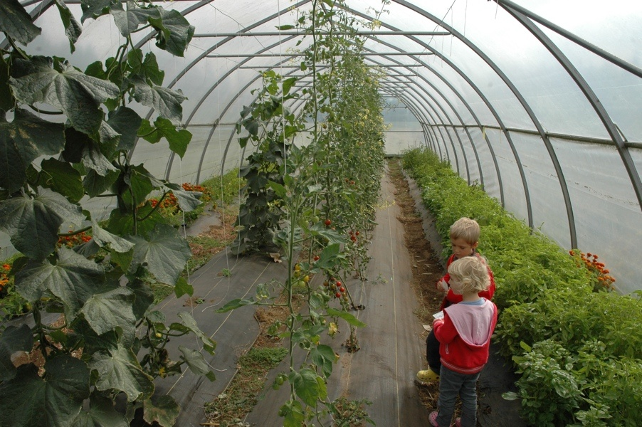

\(R_n\) is the flux density of ALL radiation. ie. the sum of component flux densities:
It can be alternatively partitioned as the sum of net short-wave radiation (\(SW^*\)) and net long-wave radiation (\(LW^*\)):
\[
R_n = SW^* + LW^*
\tag{2}\]
Component Fluxes
Recall that \(SW\) is not emitted by Earth’s surface, but \(LW\) is!
The Surface Energy Balance
We can define \(R_n\) from the perspective of the Earth’s surface in term’s of it’s energy balance. How much energy is absorbed vs. how much is emitted?
\(R_n\) is the main energy source driving near-surface climates. It can be positive (usually day) or negative (usually night).
Surface radiation balance over grass on Westham Island, Delta, BC. All values in GJ m-2 yr-1
import matplotlib.pyplot as pltimport numpy as npimport pandas as pd# Import the data from github & parse the timestamp for each recorddata_url='https://raw.githubusercontent.com/GEOS300/AssignmentData/main/Climate_Summary_BB.csv'# Pandas (pd here) allows us to set a timestamp as an index which lets us easily parse time series datadf = pd.read_csv(data_url,parse_dates=['TIMESTAMP'],index_col=['TIMESTAMP'])df['RN'] = df['SW_IN_1_1_1']-df['SW_OUT_1_1_1']+df['LW_IN_1_1_1']-df['LW_OUT_1_1_1']fig,ax=plt.subplots(1,2,sharey=True,sharex=True)# fig.autofmt_xdate(rotation=45)df['Hour'] = df.index.hour+df.index.minute/60wx = df.loc[((df.index.year==2022)&(df.index.month==12)&(df.index.day==22))]su = df.loc[((df.index.year==2023)&(df.index.month==8)&(df.index.day==21))]wx.plot(ax=ax[0],x='Hour',y=['SW_IN_1_1_1','SW_OUT_1_1_1','LW_IN_1_1_1','LW_OUT_1_1_1','RN'], color=['blue','red','blue','red','k'], style=['-','-','--','--','-'])ax[0].set_title('December 22th, 2022')ax[0].legend(['SW In','SW Out','LW In','LW Out','Rn'],ncol=2)ax[0].set_ylabel('$W m^{-2}$')su.plot(ax=ax[1],x='Hour',y=['SW_IN_1_1_1','SW_OUT_1_1_1','LW_IN_1_1_1','LW_OUT_1_1_1','RN'], color=['blue','red','blue','red','k'], style=['-','-','--','--','-'],legend=False)ax[1].set_title('August 21st, 2023')
Notice the surface properties that control the budget in addition to the input that is controlled by solar geometry and atmosphere.
The range of values is lessened by the fact that the effects of \(\alpha\) and \(T_s\) tend to partially offset each other.
Clouds reduces extremes because it decreases \(SW_\downarrow\) and increases \(LW_\downarrow\).
The importance of surface properties
Grass \(\alpha\) = 0.2
Parking lot \(\alpha\) = 0.32
Annual \(R_n\)
Why is Q* negative in night?
Latitudinal Changes
View factors
The sky view factor (\(\Psi_{sky}\)) from an object is significant in quantifying long-wave exchange in complex configurations:
A View factor refers to the fraction of radiation leaving one object that is intercepted by another object.
Fraction of an object’s hemispherical view occupied by other objects.
Radiation heat transfer between surfaces depends on the orientation of the surfaces relative to each other as well as their radiation properties and temperatures. View factor (or shape factor) is a purely geometrical parameter that accounts for the effects of orientation on radiation between surfaces. The view factor ranges between zero and one. The SVF is a measure of how much sky is visible at a given location and can be used to easily describe the 3-dimensional form of the built environment as a 2-dimensional metric. Due to the fact that only a smaller part of the sky is seen from the surface (because of the horizontal and vertical unevenness of the surface elements), the outgoing long-wave radiation loss here is more restricted than in rural areas. Therefore, theoretically it is considered to be one of the major agents of the UHI phenomenon. The UHI intensity (∆T) for a given urban location is defined as the difference between the air or surface temperatures of that urban site and those of a carefully selected nearby non-urban (reference) site or those of a mean of non-urban sites
Examples of sky view factors
Middel et al. (2018) Urban Climate
Differences Across Major Cities
Middel et al. (2018) Urban Climate
Net radiation of two-sided object
A leaf is a 2-sided object so the simple incoming (\(\downarrow\)) and outgoing (\(\uparrow\)) consideration for the ground is insufficient
Has to be done on both sides, top (t) and bottom (b)
Short- and long-wave fluxes have to be referred to one or other side or as a total outcome or average for the whole leaf. Further, transmission must be taken into account as well as multiple reflections involving surrounding objects. Similarly, for any 3-dimensional object like an animal, buildings, trees, etc. spherical geometry comes into play.
Radiation Balance of a Layer of Air
For a column of air with heat capacity \(C_a = 1210 J m^{-3} K^{-1}\)
\[
\Delta R_{n(\Delta z)}=R_{n(z+\Delta z)}-R_{n(z)}=C_a(\frac{\Delta T_a}{\Delta t})_R \Delta z
\tag{6}\]
The subscript R is to indicate \((\frac{\Delta T_a}{\Delta t})_R\) is only the radiative part of cooling/heating
Other components include convergence or divergence of sensible or latent heat flux densities.
-Heat Capacity = ratio of the amount of heat energy transferred to an object to the resulting increase in its temperature
Radiation Balance of a Layer of Air
Radiative flux convergence: if \(\Delta R_n>0\), \(\frac{\Delta T_a}{\Delta t}\) is a heating rate
Radiative flux divergence: if \(\Delta R_n<0\), \(\frac{\Delta T_a}{\Delta t}\) is a cooling rate
Radiation Balance of a Layer of Air
For thin layers of air (<50 m) during the day it is usually assumed that radiative flux divergence is negligible and can be ignored, e.g. we place a radiometer at any height in the surface layer and it gives a reasonable approximation of the surface value.
Under these conditions it is assumed that air temperature changes are solely due to sensible heat flux density changes with height.
Latent heat flux density changes are important when fog is forming.
Experimental set-up to measure the radiative flux divergence at UBC Totem Field.
Convection is the main transport process, but unless fog is actively forming (releasing latent heat) only QH is relevant for changing Ta. If inputs of sensible heat exceed losses for an air layer, warming takes place (turbulent flux convergence). If losses of sensible heat exceed gains then the layer cools (turbulent flux divergence).
Radiation Balance of a Layer of Air (iClicker)
If mean \(R_n\) at 1 m between 12:00 and 12:30 is 150 W m-2 and \(R_n\) at 100 m over the same period is 151 W m-2, what is the net temperature of the air column over this time period that is attributable to the radiative heating/cooling? Round you answer to the nearest Kelvin.
If mean \(R_n\) at 1 m between 12:00 and 12:30 is 150 W m-2 and \(R_n\) at 100 m over the same period is 151 W m-2, what is the net temperature of the air column over this time period that is attributable to the radiative heating/cooling? Round you answer to the nearest Kelvin.
Ca =1210# J m-3 K-1z1 =1#m.a.g.lz2 =100#m.a.g.lDelta_z = z2-z1Rn_z1 =150#Wm-2Rn_z2 =151#Wm-2t1 =12# 12:00 P.M.t2 =12.5# 12:30 P.M.Delta_t = (t2-t1)*3600# Convert to seconds: 1 W = 1 J s-1Delta_Rn = Rn_z2 - Rn_z1Delta_Ta = Delta_Rn/(Ca*Delta_z)*Delta_tprint(f"The net temperature change attributable to radiative heating is {Delta_Ta} K, which rounds to 0 K")
The net temperature change attributable to radiative heating is 0.015026296018031555 K, which rounds to 0 K
Latitudinal Changes
Radiative Cooling of the Atmosphere
At the equator: if mean daily \(R_n\) at the ground surface (0 m) m over is 125 W m-2 and mean \(R_n\) at the tropopause (17,000 m) is -100 W m-2, how much radiative cooling would we expect over the depth of the troposphere?
import numpy as npCa =1210# J m-3 K-1z1 =1#m.a.g.lz2 =17000#m.a.g.lDelta_z = z2-z1Rn_z1 =125#Wm-2Rn_z2 =-100#Wm-2t1 =0# 12:00 A.M. (midnight)t2 =24# 12:00 A.M. (midnight *the next day*)Delta_t = (t2-t1)*3600# Convert to seconds: 1 W = 1 J s-1Delta_Rn = Rn_z2 - Rn_z1Delta_Ta = Delta_Rn/(Ca*Delta_z)*Delta_tprint(f"The net temperature change attributable to radiative cooling is {np.round(Delta_Ta,2)} K")
The net temperature change attributable to radiative cooling is -0.95 K
Radiative Cooling of the Atmosphere (iClicker)
How is it possible that the troposphere at the equator is experiencing 1 K of radiative cooling per day, why hasn’t everything at the equator frozen?
A Sensible and latent heat flux from the surface provide a “constant” source of thermal energy to replenish the losses
B The atmosphere at the equator also experiences 1 K of radiative warming per day to cancel out the losses.
C Radiative cooling is a form of latent heat exchange and therefore does not change the sensible temperature of the atmosphere
Radiative Exchange of 3-D Objects
Similarly, for any 3-D object like an animal, buildings, trees, etc. spherical geometry comes into play.
Artificial deer in the UBC Mechanical Engineering wind tunnel with infrared thermometers (Photo: A. Black, UBC)

A Greenhouse will modify the radiative exchange between plants and their surrounding (Photo: A. Christen, UBC)
Radiative Exchange of a Human Body
Take Home Points
Surface properties in the net all-wave budget tend to partially offset each other - in particular albedo and surface temperature.
Temporal and spatial differences in net all-wave radiation are controlled by the distribution of short-wave irradiance, atmospheric conditions (clouds) and surface properties.
Net all-wave radiative exchange of two-sided and 3D objects needs to consider distributions of radiative fluxes surrounding the object.